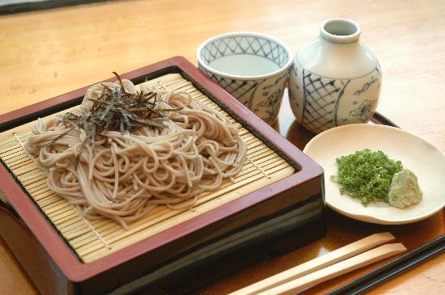
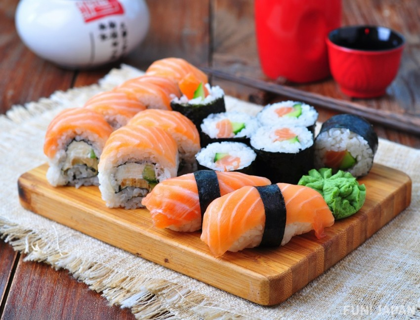
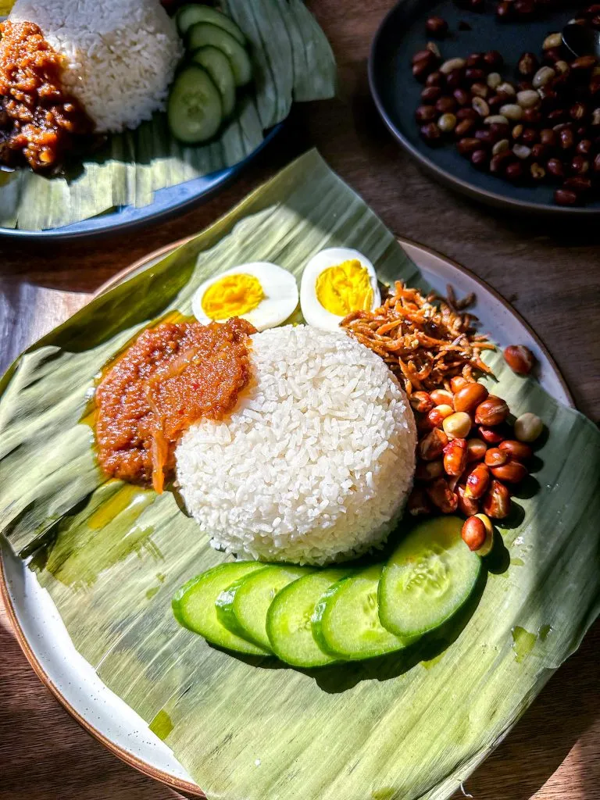
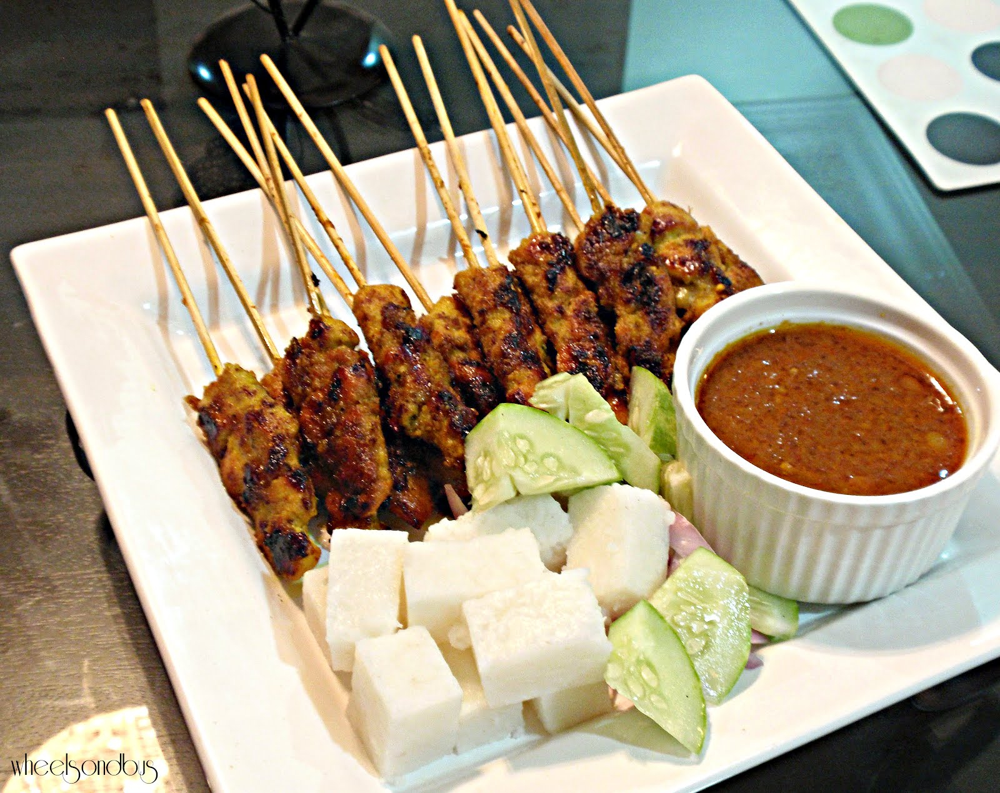
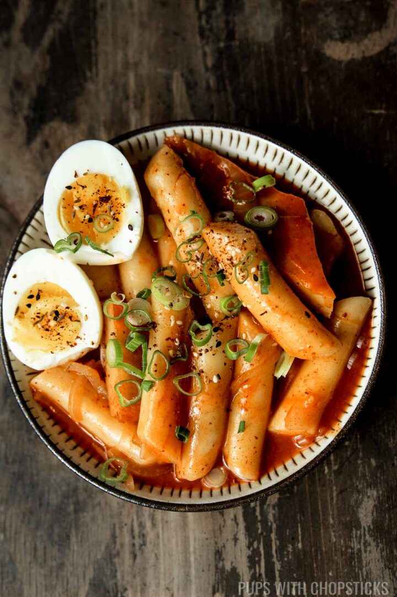

🖱️ 写真をクリックすると説明が見えます

寒い日には、冷たくてさっぱりしたざるそばを味わうのも最高です。中でも、コシのあるそばを濃いめのつゆでいただくのが私のお気に入りです。

地元の魚市場で味わった新鮮なお寿司は、一生忘れられない体験です。特に、とろっと甘いサーモン寿司は私の"永遠の推し"なんです。

マレーシアで食べたナシレマッは、まさに"幸せの一皿"。ココナッツミルク香るふわふわご飯とピリ辛サンバルの組み合わせは、私の心を一瞬でつかんじゃいました。

炭火で焼けたお肉に甘辛いピーナッツソースをつけた瞬間、もう完全にノックアウト。ふわっとしたナシインピットと一緒に食べるのは絶対外せないんです。
キムチって、ただの漬物じゃないんです。食べた瞬間、ピリ辛くて酸っぱくて、なんか止まらなくなる。時間が経つほど味が深くなるのも、もう反則レベル。キムチなしの生活？考えられないんです。

トッポッキって、もちもちして 甘辛（あまから）くて、食（た）べ 始（はじ）めたら 絶対（ぜったい） 止（と）まらない。一口（ひとくち）食（た）べたら、もう 次（つぎ）が 欲（ほ）しくなる。みなさん、トッポッキを 食（た）べたことありますか？